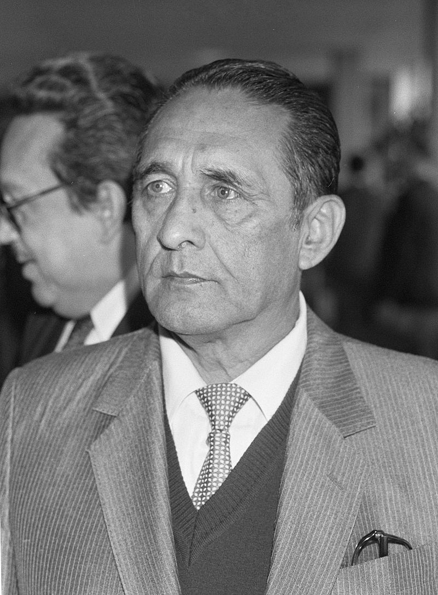

Departamento de San Salvador
Historia
San Salvador es la capital de la República de El Salvador y la cabecera del departamento y municipio homónimos.3 Como capital de la nación, alberga las sedes del Gobierno y el Consejo de Ministros de El Salvador, Asamblea Legislativa, Corte Suprema de Justicia y demás instituciones y organismos del Estado, así como la residencia oficial del Presidente de la República. Es la mayor ciudad del país desde el punto de vista económico y demográfico, y asiento de las principales industrias y empresas de servicios de El Salvador.
Después de las victorias sobre las huestes pipiles en las batallas de Acajutla y Tacuzcalco, el conquistador Pedro de Alvarado intentó someter a los nativos de la capital del Señorío de Cuzcatlán a su arribo el 18 de junio de 1524. Los cuscatlecos, sin embargo, huyeron a las montañas vecinas y el extremeño tuvo que replegarse hacia la zona de la actual Guatemala. La primera villa de San Salvador se fundó a menos de un año de esta expedición, por una misión no documentada al mando de Gonzalo de Alvarado.9La primera mención que existe acerca de este asentamiento es una carta del mismo Pedro de Alvarado en Guatemala el 6 de mayo de 1525 haciendo notar que no se podía celebrar un cabildo por la ausencia de Diego de Holguín quien había partido a tomar el puesto de Alcalde ordinario de la villa de San Salvador.
Personajes Historicos:
Francisco Morazan
José Francisco Morazán Quezada (Tegucigalpa, 3 de octubre de 1792 – San José de Costa Rica, 15 de septiembre de 1842)12 fue un militar y político hondureño que gobernó a la República Federal de Centro América durante el turbulento periodo de 1827 a 1838. Saltó a la fama luego de su victoria en la legendaria Batalla de La Trinidad, el 11 de noviembre de 1827.3 Desde entonces, y hasta que fue derrocado en Guatemala por Rafael Carrera en 1840, Morazán dominó la escena política y militar de Centroamérica..

Jose Napoleon Duarte:
Fundó el Partido Demócrata Cristiano, siendo primero secretario general y, desde 1972, presidente. Este mismo año fue candidato a la Presidencia de la República por la Unión Nacional Opositora, que ganó contra el coronel Arturo Armando Molina. Un grupo de militares que apoyaban a Molina, dieron un golpe de Estado por lo que Duarte fue arrestado, torturado y se vio obligado a exiliarse en Venezuela, donde sería elegido vicepresidente de la Unión Mundial Demócrata Cristiana, y más tarde, presidente de la Organización Demócrata Cristiana de América. En 1979 tras el derrocamiento del general Carlos Humberto Romero regresó a El Salvador. Entró a la Tercera Junta Revolucionaria de Gobierno el 3 de marzo de 1980 y luego se convirtió en presidente de la Junta el 13 de diciembre del mismo año. Finalmente entrega el gobierno a Álvaro Magaña el 2 de mayo de 1982.
